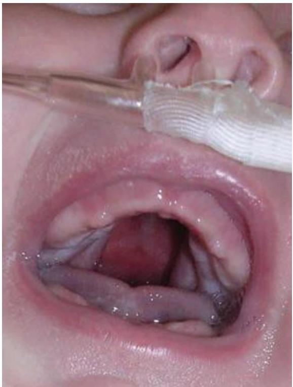
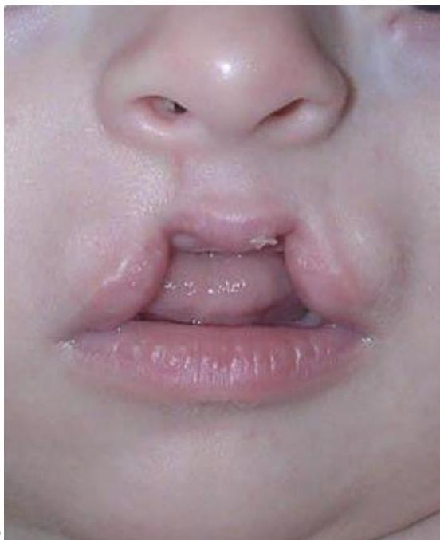
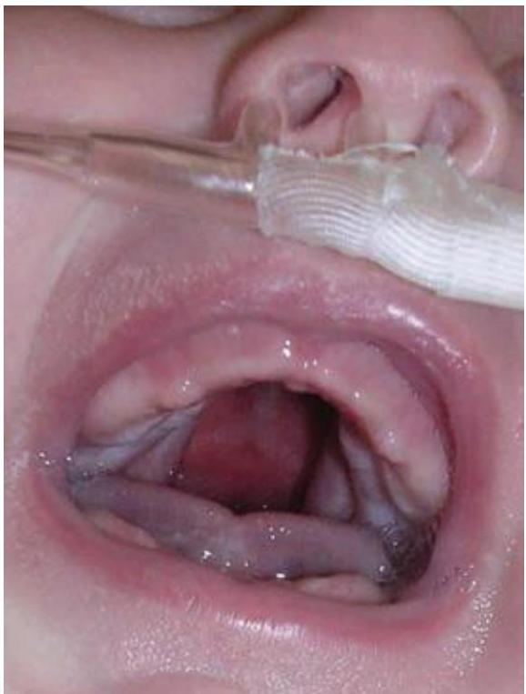
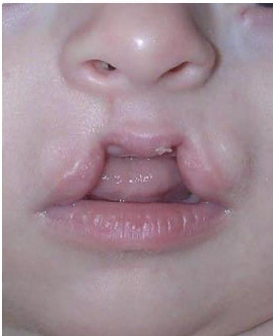

Congenital Anomalies
Cleft Lip & Palate
Cleft Lip (CL): Opening in the upper lip that may extend into the nose. Failure of merging between medial nasal and maxillary processes (5 weeks).
Cleft Palate (CP): Congenital split in the roof of the mouth. Failure of fusion of palatal shelves (8-12 weeks).
 



Fig 8.1: Variations of clefts: (A) Lateral cleft lip, (B) Bilateral cleft lip, (C) Cleft palate, (D) Midline cleft lip.
Management
Feeding Strategy
- Use soft, cross-cut nipples or special cleft bottles.
- Position infant upright to prevent nasal regurgitation/choking.
- Squeeze bottle gently (don't rely solely on sucking).
- Burp frequently due to air swallowing.
Surgery (Rule of 10s): Traditionally, surgery is considered when the infant is 10 weeks old, weighs 10lb (4.5kg), and has 10g/dL hemoglobin.
Esophageal Atresia & TEF
Esophageal Atresia (EA): Esophagus ends in a blind pouch.
Tracheoesophageal Fistula (TEF): Abnormal connection between esophagus and trachea.
Fig 8.2: Most common type (86%): Proximal esophageal atresia with distal TEF.
The 3 C's of Clinical Manifestations
- Choking
- Coughing
- Cyanosis
Infant swallows normally but fluid returns through nose/mouth or is aspirated.
Pre-operative Management
- NPO: Withhold all oral feedings.
- Position: Prone with head elevated 30-40° to prevent reflux/aspiration.
- Suction: Continuous suction of upper pouch (Replogle tube).
Hypertrophic Pyloric Stenosis
Thickening of the pyloric sphincter muscle causing outlet obstruction. Classically presents in 1st born males between 3-6 weeks of age.
Clinical Features
- Projectile Vomiting: Non-bilious, forceful, increasingly frequent.
- Olive Mass: Firm, mobile, ~2cm mass palpable in RUQ.
- Visible Peristalsis: Gastric waves moving left to right.
- Metabolic Imbalance: Hypochloremic, hypokalemic metabolic alkalosis.
Management
Pre-op: Correct fluid and electrolyte imbalance (Metabolic alkalosis must be corrected before surgery).
Surgery: Fredet-Ramstedt Pyloromyotomy (longitudinal incision of pyloric muscle).
Abdominal Wall Defects
| Feature | Omphalocele | Gastroschisis |
|---|---|---|
| Location | Through umbilical ring (central) | Lateral to umbilicus (usually right) |
| Covering | Sac present (amnion/peritoneum) | No sac (exposed bowel) |
| Contents | Intestine, liver, spleen | Usually intestine only |
| Associations | High (Cardiac, Chromosomal) | Rare |
Fig 8.3: Left: Omphalocele (note sac). Right: Gastroschisis (exposed bowel).
Management
- Thermoregulation: Cover with sterile plastic bag or bowel bag (prevent heat/fluid loss).
- Decompression: NGT to suction.
- Protection: Sterile, warm saline-soaked gauze if bag unavailable.
- Surgery: Primary closure or staged repair using a Silo.
Hirschsprung’s Disease
Also known as Congenital Megacolon. Caused by absence of parasympathetic ganglion cells in the distal bowel (aganglionic segment), leading to lack of peristalsis and functional obstruction.
Fig 8.4: Barium enema showing "transition zone" between dilated proximal colon (ganglionated) and narrow distal segment (aganglionic).
Clinical Manifestations
- Newborn: Delayed passage of meconium (>48 hrs), bilious vomiting, abdominal distension.
- Infant/Child: Chronic constipation, ribbon-like stools, failure to thrive.
- Enterocolitis: Explosive diarrhea, fever, severe prostration (Life-threatening complication).
Diagnosis: Rectal biopsy (Gold standard - shows absence of ganglion cells).
Treatment: Surgical pull-through procedure (removing aganglionic segment). Temporary colostomy may be needed initially.
Neural Tube Defects
Hydrocephalus
Accumulation of excessive CSF causing ventricular enlargement and increased ICP.
- Signs (Infant): Bulging fontanelle, sunset eyes (sclera visible above iris), high-pitched cry, increased head circumference.
- Treatment: Ventriculoperitoneal (VP) Shunt.
Spina Bifida
Defective closure of the vertebral column.
Fig 8.5: Types of Spina Bifida: Occulta vs Cystica.
Types
- Spina Bifida Occulta: Not visible externally. May have hair tuft/dimple.
- Meningocele: Sac contains meninges + CSF (No nerves).
- Myelomeningocele: Sac contains meninges + CSF + Nerves. Associated with paralysis, hydrocephalus, neurogenic bladder.
Prevention
Maternal Folic Acid supplementation (400mcg/day) preconception and during early pregnancy significantly reduces risk.
Test Your Understanding
Complete this quiz to assess your comprehension of Congenital Anomalies.
Loading quiz...